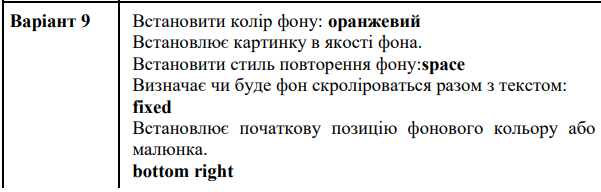

Блок контент id="content"
ВІД ЗИМИ І ДО ЗИМИ
Січень січе, Лютий лютує, Березень плаче,
Квітень квітує. Травень під ноги Стелить
травицю. Червень складає Сіно в копиці. Липень
медовий Бджілок чарує. Серпень чудовий Булки
дарує. Вересень трусить Груші в садочку.
Жовтень гаптує Клену сорочку. Йде листопад,
Застеля килими. Грудень надходить — Початок
зими. Ф. Петров
Корсет (фр. corset) — предмет одежды в виде широкого пояса с вшитыми упругими пластинками, туго охватывающего нижнюю часть грудной клетки и животдля придания фигуре изящной осанки и стройной талии.Корсет используют для создания желаемого силуэта: он подчёркивает стройность фигуры (визуально уменьшая талию и увеличивая плечи), поддерживает грудь (создавая видимость объёма и упругости), создаёт нужную (или модную) осанку. Плечевые ремни на некоторых версиях корсетов разворачивали плечи подобно современным ортопедическим реклинаторам для поддержания гордой осанки.
Обычно корсет охватывал торс, начинаясь или на уровне подмышек, или непосредственно под грудью и заканчиваясь над бёдрами, иногда заходя на них. В некоторых случаях и в некоторые эпохи (например, около 1905 года) доходя до колен. Также был известен более короткий вид корсета, охватывающий только талию, под названием «поясная подпруга» (англ. waist cincher). На некоторых корсетах крепились подвязки для чулок.Корсеты шьют из мягкого материала (ткани, кожи, и тому подобное) с жёсткими упругими вставками из дерева, китового уса или стали в специально создаваемых карманах.С одной стороны корсета (обычно со спины, также может быть спереди и с одного или обоих боков) делается шнуровка. С её помощью регулируется талия корсета. Для корсетов со шнуровкой сзади нередко делают спереди две жёсткие планшетки из дерева или стали с застёжками для более удобного снятия и надевания — бюск.
В середине XIX столетия корсеты стали предметом резкой критики со стороны медиков. Врачи настаивали на негативном влиянии корсета на женский организм — медицинская критика фактически вытеснила отрицательную оценку этого вида одежды моралистами. Корсеты начинали носить в возрасте 4—5 лет, что приводило к систематическим искажениям костной ткани: ребра и внутренние органы развивались с нарушениями и приобретали деформации. В 1903 году врач парижский Жозефина Гош-Саро предложила разделить корсет на две составляющих: верхнюю — для поддержки груди, и нижнюю — пояс для чулок. Это деление было положено в основу бельевой схемы всего XX века и, фактически, сохраняется в женской нижней одежде до сих пор. Несмотря на критику, корсет оставался центральным элементом одежды на протяжении нескольких столетий.
Никола́й Васи́льевич Го́голь (фамилия при рождении Яно́вский, с 1821 — Го́голь-Яно́вский; 20 марта [1 апреля] 1809, Сорочинцы, Миргородский уезд, Полтавская губерния — 21 февраля [4 марта] 1852, Москва) — русский прозаик, драматург, критик, публицист, признанный одним из классиков русской литературы[7][8]. Происходил из старинного дворянского рода Гоголей-Яновских.Никола́й Васи́льевич Го́голь (фамилия при рождении Яно́вский, с 1821 — Го́голь-Яно́вский; 20 марта [1 апреля] 1809, Сорочинцы, Миргородский уезд, Полтавская губерния — 21 февраля [4 марта] 1852, Москва) — русский прозаик, драматург, критик, публицист, признанный одним из классиков русской литературы. Происходил из старинного дворянского рода Гоголей-Яновских.
По мнению В.Белинского и Н.Чернышевского, Гоголь стал основателем литературного направления — основного этапа «натуральной школы» 1840-х годов; современные исследователи считают, что он оказал большое влияние на русскую и мировую литературу. Влияние Гоголя на своё творчество признавали Михаил Булгаков, Фёдор Достоевский, Рюноскэ Акутагава, Фланнери О’Коннор, Франц Кафка и многие другие.
Николай Васильевич Яновский родился 20 марта (1 апреля) 1809 года в Сорочинцах близ реки Псёл, на границе Полтавского и Миргородского уездов (Полтавская губерния). Николаем его назвали в честь Святителя Николая [1]. Согласно семейному преданию, он происходил из старинного казацкого рода[11] и предположительно был потомком Остапа Гоголя — гетмана Правобережного Войска Запорожского Речи Посполитой. Некоторые из его предков приставали и к шляхетству, и ещё дед Гоголя, Афанасий Демьянович Гоголь-Яновский (1738—1805), писал в официальной бумаге, что «его предки, фамилией Гоголь, польской нации[14]», хотя большинство биографов склонно считать, что он всё же был малороссом[7]. Ряд исследователей, чьё мнение сформулировал В. В. Вересаев, считают, что происхождение от Остапа Гоголя могло быть сфальсифицировано Афанасием Демьяновичем для получения им дворянства, так как священническая родословная была непреодолимым препятствием для приобретения дворянского титула.
В декабре 1828 года Гоголь переехал в Санкт-Петербург. Здесь впервые ждало его жестокое разочарование: скромные средства оказались в большом городе совершенно недостаточными, а блестящие надежды не осуществлялись так скоро, как он ожидал. Его письма домой того времени смешаны из этого разочарования и туманного упования на лучшее будущее. В запасе у него были сила характера и практическая предприимчивость: он пробовал поступить на сцену, стать чиновником, отдаться литературе.Несмотря на его многочисленные попытки, в актёры его так и не приняли.
Во второй понедельник октября в США празднуется День Колумба: 12 октября 1492 года итальянский исследователь Христофор Колумб ступил на американский континент и объявил эти земли владениями Испании. Власти США официально утвердили этот день в 1934 году, а в 1968-ом он стал федеральным праздником.

Первый закон Ньютона постулирует существование инерциальных систем отсчёта. Поэтому он также известен как закон инерции. Инерция (она же инертность[3]) — свойство тела сохранять скорость своего движения неизменной по величине и направлению, когда не действуют никакие силы, а также свойство тела сопротивляться изменению его скорости. Чтобы изменить скорость движения тела, необходимо приложить некоторую силу, причём результат действия одной и той же силы на разные тела будет различным: тела обладают разной инерцией (инертностью), величина которой характеризуется их массой.
Второй закон Ньютона — дифференциальный закон движения, описывающий взаимосвязь между приложенной к материальной точке силой и получающимся от этого ускорением этой точки. Фактически, второй закон Ньютона вводит массу как меру проявления инертности материальной точки в выбранной инерциальной системе отсчёта (ИСО).Масса материальной точки при этом полагается величиной постоянной во времени и независящей от каких-либо особенностей её движения и взаимодействия с другими телами.
Этот закон описывает, как взаимодействуют две материальные точки. Пусть имеется замкнутая система, состоящая из двух материальных точек, в которой первая точка может действовать на вторую с некоторой силой , а вторая — на первую с силой. Третий закон Ньютона утверждает: сила действия равна по модулю и противоположна по направлению силе противодействия.